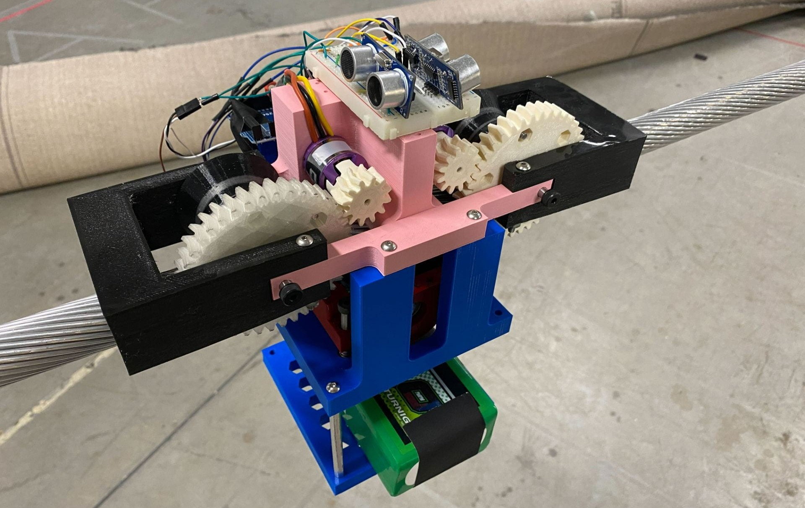
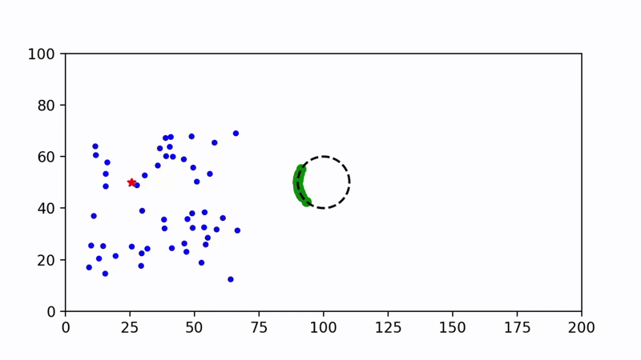
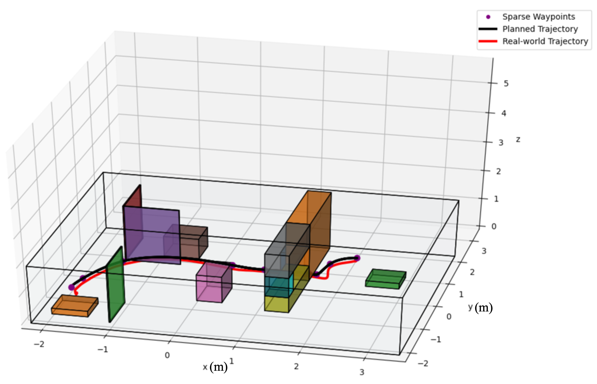
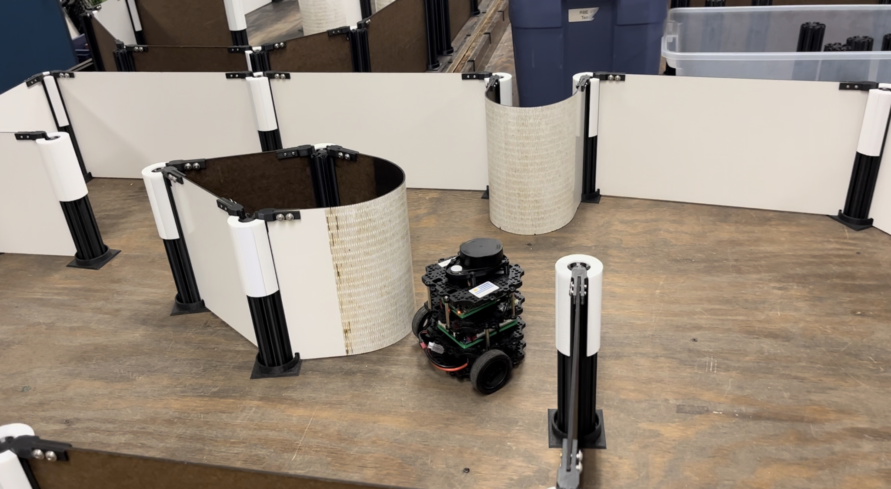
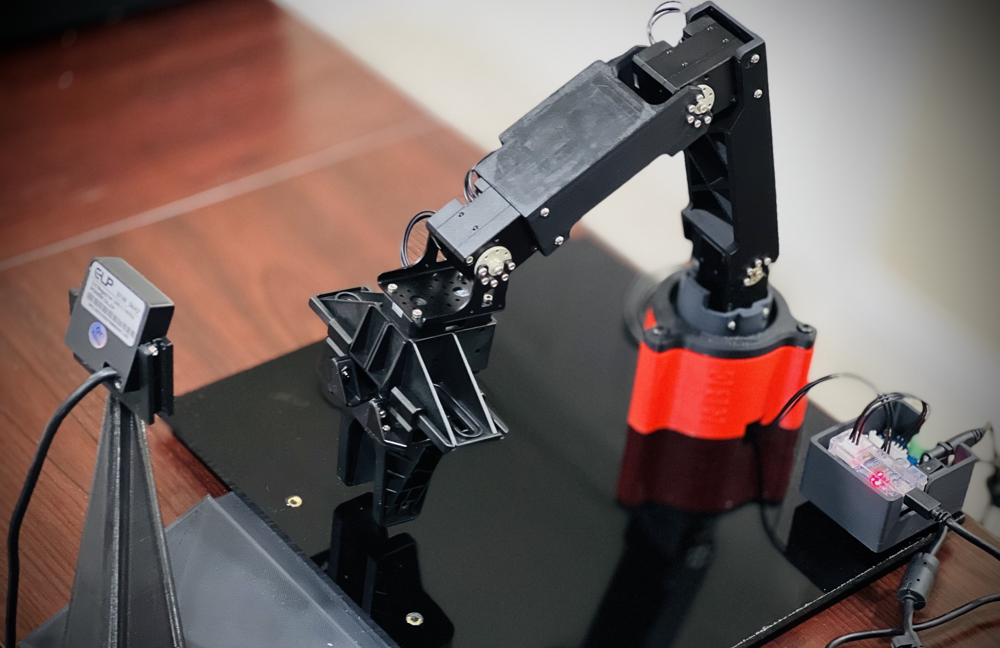
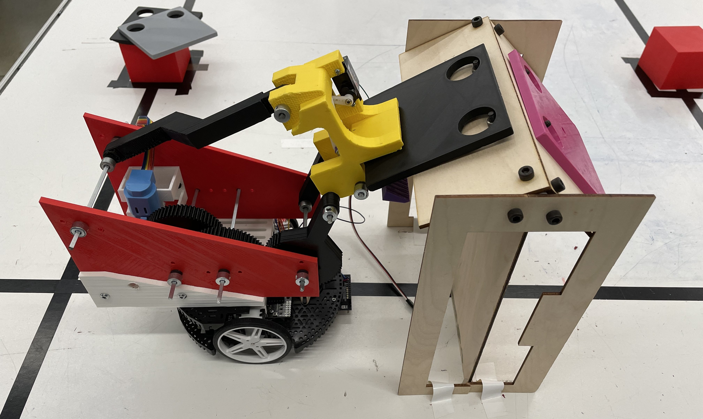

Project Experiences
Here are projects from my undergraduate and graduate studies, spanning work in mobile robots, legged robots, robotic manipulators, and aerial robots.
Capstone Projects
BiQu: Bimodal Quadruped
Overview
In the growing field of legged robotics, the integration of locomotion and manipulation—loco-manipulation—poses a significant challenge. This work presents an open-source framework that facilitates planning through contact, enhancing robots’ capabilities in logistics, construction, and even planetary exploration. We validate our framework’s effectiveness on the Unitree Go1 equipped with a custom arm, demonstrating its application across various gaits and jumping maneuvers.
Publication
Bimodal Quadruped Robot
Ethan Chandler*, Akshay Jaitly*, Lehong Wang*, Puen Xu*, Yifu Yuan*, Tao Zou*, Digital WPI, 2024. (* Equal Contribution)
RBE Department MQP Award Honorable Mention, WPI, May 2024.
Paper Code ALMaS Group, WPI

Bird Deterrent Robot
Overview
This project focused on designing and building an autonomous robot to patrol high-voltage power lines and deter ravens from perching, a behavior that can lead to power outages and equipment damage. The robot is equipped with a real-time bird detection system using YOLOv5 and is controlled through a ROS-based framework that manages navigation, perception, and actuation. A hierarchical state machine governs the robot’s high-level behavior, enabling it to respond to environmental events and make autonomous decisions during patrol. Communication between ROS and a dedicated microcontroller ensures smooth coordination of sensors and actuators, supporting reliable operation in challenging outdoor conditions.
Code
ROSE-HUB, WPI

Course Projects
Flocking Control for Dynamic Object Tracking
Overview
This project explores decentralized flocking control, where a group of mobile robots works together to track a moving target while maintaining formation and avoiding obstacles. The algorithm enables each robot to make local decisions based on its neighbors, resulting in cohesive group behavior. We evaluated the system’s performance in terms of tracking accuracy, obstacle avoidance, and resilience against disturbances or adversarial agents. The project also identifies current limitations and proposes improvements for more robust real-world deployment.
Report
Video
Code
MEAM 6240, Penn

Quadrotor Planning and Control
Overview
This project focused on testing and validating control and navigation algorithms on the Crazyflie 2.0 quadrotor in a real-world lab environment. The objective was to enable the quadrotor to accurately reach a series of target positions while navigating through different maps and mazes. The navigation pipeline employs an A* algorithm for global path planning, followed by a quadratic program to generate smooth trajectories. A nonlinear geometric controller tracks these trajectories precisely, while a Kalman filter provides accurate state estimation. Together, these components enable robust and agile flight performance.
Report
Video
MEAM 6200, Penn

Unknown Maze SLAM and Navigation
Overview
A TurtleBot 3 was programmed to autonomously explore and navigate an unknown maze using laser-based SLAM to generate a real-time map. Adaptive Monte Carlo Localization (AMCL) allowed the robot to accurately determine its position within the self-created map. For navigation, an A* search algorithm was used to plan efficient paths to target destinations, enabling effective mapping, localization, and movement in complex, unfamiliar environments.
Report
Code
RBE 3002, WPI

Vision-Based Robotic Pick and Place
Overview
An autonomous vision-based robotic pick-and-place system was developed using a 3 DoF spherical robot manipulator to sort balls of different colors. MATLAB was employed for real-time color identification by processing the live camera feed, enabling accurate detection and classification of balls. The system integrates robot kinematics to compute precise manipulator movements and motion planning techniques that generate smooth quintic polynomial trajectories for efficient grasping and placement. This combination allows the robot to reliably sort objects based on color with high accuracy and responsiveness.
Report
RBE 3001, WPI

Robot Escape Room
Overview
A team of robots was customized and programmed to collaboratively navigate an escape room maze by communicating through MQTT. The maze included various beacons and tags that guided the robots toward the exit. Key features of the system include PI speed control, a PD wall-following algorithm, and sensor fusion combining accelerometer and gyroscope data for accurate orientation. Wireless communication enabled coordinated movement, while forward and inverse kinematics ensured precise navigation through the arena.
Report
Video
RBE 2002, WPI

Robotic Replacement of Solar Panels
Overview
A team of mobile robots was built and programmed to collaboratively pick up solar panels and place them onto roofs with varying angles in a competitive setting. A custom-designed and manufactured gearbox was developed to enable a 9N-cm motor to lift a CAD-designed, 3D-printed four-bar robotic arm. This arm precisely positioned the solar panels within a tight tolerance of 5mm, ensuring reliable placement across different roof inclines.
Video
RBE 2001, WPI
